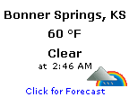

Windows 2000 - Windows World
Now with Microsoft Windows XP Home out, there are no new Microsoft Windows Operating Systems that are MS-DOS based. Microsoft did this because it will make the opeating system more reliable, faster, and easier to use.
Microsoft Windows Server 2003 Is Now Available!
Microsoft officially released Microsoft Windows Server 2003 on April 24, 2003 at a launch event in San Francisco, CA. Also Microsoft released Microsoft Visual Studio .NET 2003 at the same launch event in San Francisco. You can find more information on Microsoft Windows Server 2003 by visiting the Microsoft Windows Server 2003 web site (link below)! You also can find more information on Microsoft Visual Studio .NET 2003 by visiting the Microsoft Visual Studio web site (link below)!
Microsoft Windows Server 2003 Web Site
Microsoft Visual Studio Web Site
Microsoft Windows Server 2003 Launch Keynote (56k)
Microsoft Windows Server 2003 Launch Keynote (100k)
Microsoft Windows Server 2003 Launch Keynote (300k)
Microsoft Windows XP Launch Webcast
On October 25, 2001, Microsoft released Microsoft Windows XP. Microsoft Windows XP is the first Microsoft Operating system to use the NT kernel for both the Home and Professional versions. To view a webcast, click the corresponding link that matches you bandwidth.
Microsoft Windows XP Launch Page
Microsoft Windows XP Launch Webcast (56k)
Microsoft Windows XP Launch Webcast (100k)
Microsoft Windows XP Launch Webcast (300k)
News
 Microsoft Windows 2000 Service Pack 4 is getting closer to being finished. Microsoft Windows 2000 Service Pack 4 is in the RC stages of its development. Microsoft Windows 2000 Service Pack 4 is expected to be released sometime this summer.
Microsoft Windows 2000 Service Pack 4 is getting closer to being finished. Microsoft Windows 2000 Service Pack 4 is in the RC stages of its development. Microsoft Windows 2000 Service Pack 4 is expected to be released sometime this summer.
- Microsoft Windows Server 2003 was officially released Microsoft Windows Server 2003 and Microsoft Visual Studio .NET 2003 at a launch event in San Francisco, CA on April 24, 2003.
- Somebody Out Of Redmond Leaked A New Build Of Microsoft Windows Codename "Longhorn". The New Build Number Is Build 4008. The Build Features A Few New Changes. To Find Out More, Please Visit One Of These Web Sites:
Paul Thurrott's Super Site for Windows
Bink Windows XP
- Microsoft has released Windows XP Service Pack 1a. The difference between Windows XP Service Pack 1 and 1a is that in 1a Microsoft has took out Microsoft Virtual Machine.
- Microsoft already has plans for an Operating System that will be a major upgrade for Windows XP. The Operating System is code named "Longhorn" and
should be available in 2004. For more information, go to Paul Thurrott's Super Site
for Windows or read the article from Paul Thurrott's WinInfo.
Microsoft Windows 2000 Service Pack 4 is getting closer to being finished. Microsoft Windows 2000 Service Pack 4 is in the RC stages of its development. Microsoft Windows 2000 Service Pack 4 is expected to be released sometime this summer.
Paul Thurrott's Super Site for Windows
Bink Windows XP
Downloads
These Are Recommended Downloads For Microsoft Windows Users.
For more information on computers that come pre-installed with Microsoft Windows Operating Systems, pick one from the link box below.
There are also more operating systems then just Microsoft Windows, some are even better and more reliable then Microsoft Windows. To learn more on one, just pick it in the link box.
How many poeple have visited this web page since 3/29/02.

View My Guestbook
Sign My Guestbook
